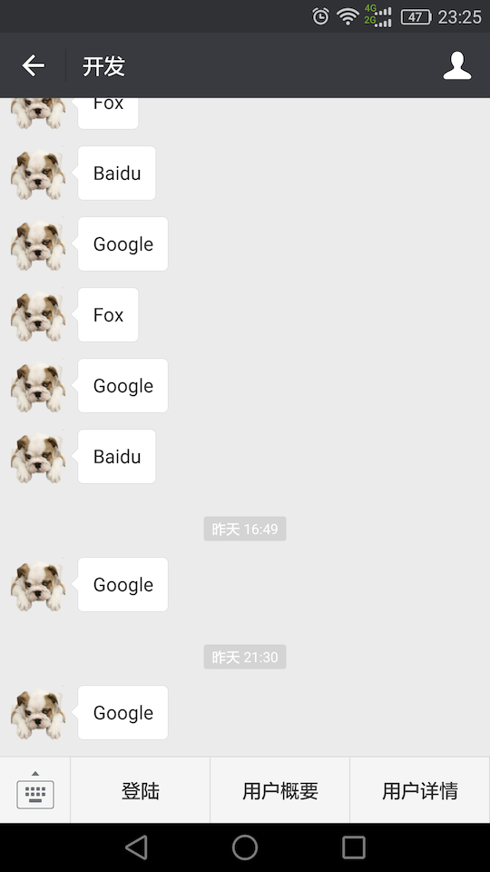

微信企业号主要是为了链接组织和内部员工的，通过提供通讯录、组织新闻公告、活动、投票、调研、论坛 BBS、意见建议墙、招聘、考勤、流程审批、任务管理等一系列功能和服务，提高组织运作效率。微信企业号是微信为企业客户提供的移动服务，旨在提供企业移动应用入口。
微信企业号，有以下一些特点：
关注更安全
只有企业通讯录的成员才能关注企业号，分级管理员、保密消息等各种特性确保企业内部信息的安全
应用可配置
企业可自行在企业号中配置多个服务号，可以连接不同的企业应用系统，只有授权的企业成员才能使用相应的服务号
消息无限制
发送消息无限制，并提供完善的管理接口及微信原生能力，以适应企业复杂、个性化的应用场景
使用更便捷
企业号在微信中有统一的消息入口，用户可以更方便地管理企业号消息。微信通讯录也可以直接访问企业号中的应用
既然要做微信企业号的开发，那么首先申请一个企业号。
申请企业号
- 访问 https://mp.weixin.qq.com
- 点击 立即注册
- 点击 企业微信(企业号的升级版，企业号的功能都有)
- 我们自己练习的话，没有公司的营业执照等，那么申请 组织 的企业号，点击 没有组织机构代码证，继续注册
- 接下来就简单了，跟着说明走
- 最后登陆企业微信(以及没有企业号的独立登陆了):
- 访问 http://work.weixin.qq.com
- 点击 企业登陆
添加成员和创建应用
一个企业号可以有多个应用，每个应用可以添加成员(又叫可视范围)
- 添加成员:
- 点击 通讯录
- 点击 添加成员
- 点击新添加成员右边的 邀请
- 成员通过邀请
- 创建应用
- 点击 企业应用
- 点击 创建应用
- 给应用添加成员
- 进入应用
- 点击 编辑
- 点击 可见范围 右边的 添加
- 选择要加入应用的成员
开发准备
网页中进入应用，设置
网页授权及 JS-SDK 的域名
开发没有外网可访问的域名怎么办呢？可以使用 Ngrok 等把内网映射为外网可访问的域名，可参考 http://qtdebug.com/mac-local-to-web/
自定义菜单
微信中进入企业号应用，界面为:

接口说明
获取 access_token，有效期为 2 小时，后面提到的 access_token 都是它:
1
2
3
4
5
6URL: https://qyapi.weixin.qq.com/cgi-bin/gettoken?corpid=CORPID&corpsecret=APPSECRET
Method: GET
Params:
corpsecret: 应用中的 Secret
参考: http://qydev.weixin.qq.com/wiki/index.php?title=主动调用用户登陆获取 code，后面用来获取成员信息，有效期很短
1
2
3
4
5
6
7
8
9
10URL: https://open.weixin.qq.com/connect/oauth2/authorize?appid=CORPID&redirect_uri=REDIRECT_URI&response_type=code&scope=SCOPE&agentid=AGENTID&state=STATE#wechat_redirect
Method: GET
Params:
appid: 企业号的 CorpID
redirect_uri: 登陆成功后的回调 url，需要进行一次 url encode
response_type: 为 code
scope: snsapi_privateinfo 需要用成员击确认授权访问，可以访问成员的手机号码、邮箱等
agentid: 应用的 AgentId
参考: https://work.weixin.qq.com/api/doc#10028根据 code 获取成员基础信息，有 UserId，user_ticket(有效期为 30 分钟)
1
2
3
4
5URL: https://qyapi.weixin.qq.com/cgi-bin/user/getuserinfo?access_token=ACCESS_TOKEN&code=CODE
Methpd: GET
Params:
access_token: 上面使用 corpsecret + appsecret 获取到的 access token
code: 上面用户登陆后得到的 code根据 UserId 获取成员详细信息
1
2
3
4
5
6
7
8URL: https://qyapi.weixin.qq.com/cgi-bin/user/get?access_token=ACCESS_TOKEN&userid=USERID
Method: GET
Params:
access_token:
userid: 上面获取成员信息时候得到的
参考: 文档是错的，按照上面的接口返回的数据是 {"errcode": -1, "errmsg": "system error"}
这个接口是微信提供的接口调试工具得到的接口，访问 http://qydev.weixin.qq.com/debug接口调试工具: http://qydev.weixin.qq.com/debug
文档中有些接口说明是错误的，例如访问成员的详细信息就不对，可以使用此接口调试工具进行访问，找出正确的接口。并且需要去企业号开发者中心才能找到，在企业微信的 API 文档中没有找到。
编程案例
HTTP 访问使用了 EasyOkHttp，Gradle 依赖为 compile 'com.mzlion:easy-okhttp:1.1.2'
1 | package com.xtuer.controller; |
测试步骤:
- 浏览器访问 http://buch.ngrok.cc/login/token
- 微信中点击 登陆 获取 code
- 点击 用户概要 获取 UserId
- 点击 用户详情 使用 UserId 获取用户的手机号码、邮箱等